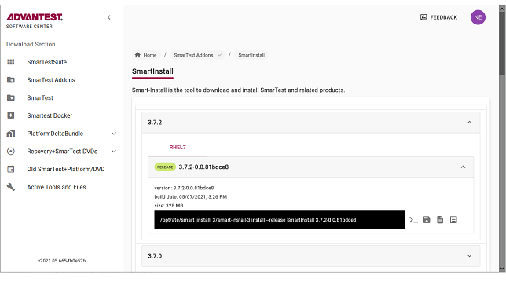

Downloading and installing the SmartInstall add-on
To be able to install SmarTest software, first download and install the SmartInstall add-on.
About this task
Installing the smart-install-3 software used to install SmarTest software
is a three step process:
- Download the SmartInstall package
- Install SmartInstall
- Verify the installed device (system controller workstation)
Before you begin
Make sure the following prerequisites are met:
- The workstation operating system is Red Hat Enterprise Linux ≥ 7.2.x or the required operating system version for the software to be to be installed, whichever is the higher.
-
You have a my.advantest.com account with access to 'Software Center' and access to the software areas of interest, such as 'smart install 3' to install SmarTest Work Center software. You can request an account at: https://login.myadvantest.com/ and ask for access to "Software Center" and "smart install 3".
The installation commands for SmartInstall must be run as system administrator (root). The two main command line options are:
- Use
suand enter the root password when prompted. - Prefix the command with
sudoand enter your password when prompted.
Procedure
-
To get the list of all available SmartInstall releases, from the left menu select:
SmarTest Addons, scroll down to SmartInstall, and click Show.

-
Select the latest SmartInstall release and download the package by clicking the
 icon.
icon.

The SmartInstall (tar.gz) package is downloaded to your browser's download folder.
Example package: smartinstall_3.7.2-0.0.81bdce8_rhel7.tar.gz
Results
SmartInstall is installed and can be used to install Advantest SmarTest products.
What to do next
Functional changes
- Introduced in SmarTest 8.4.3